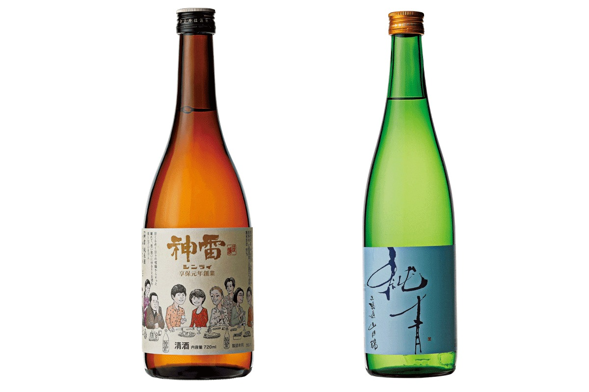
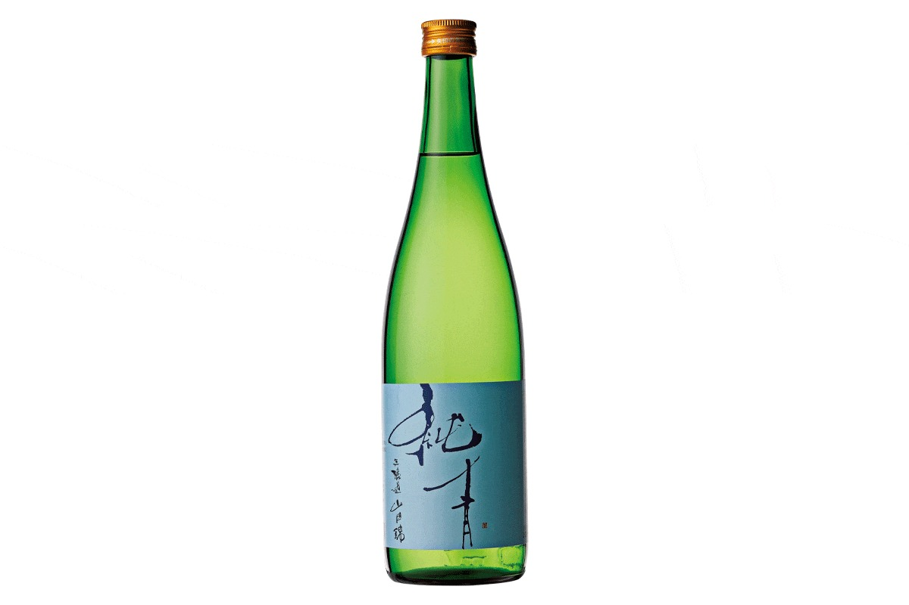
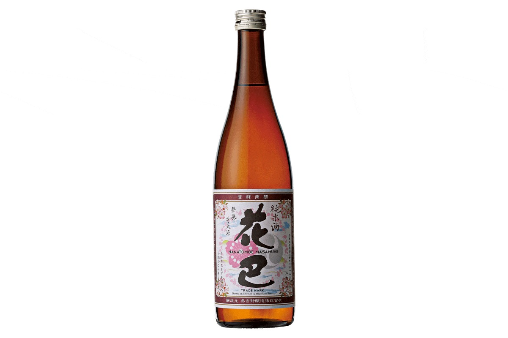
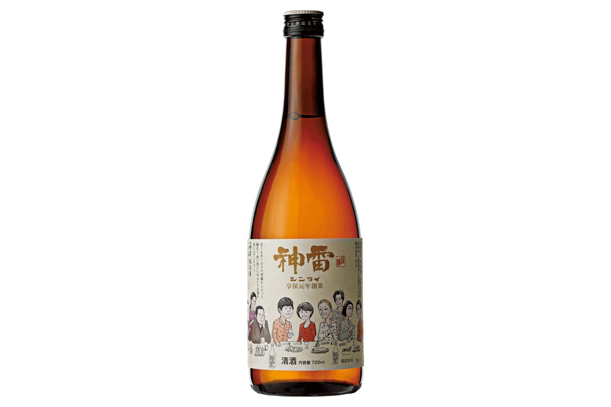
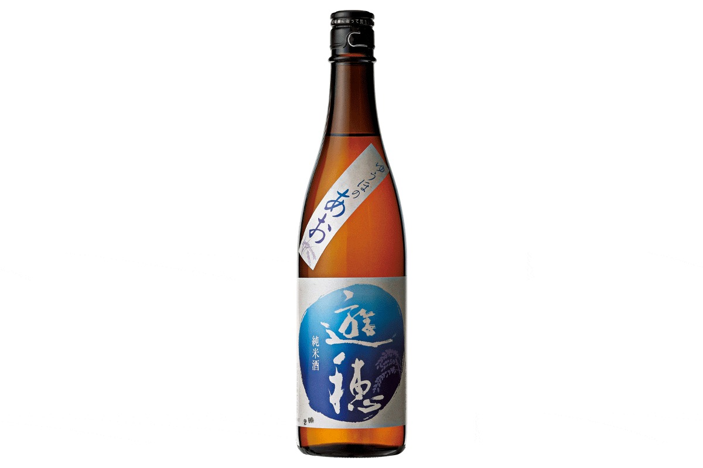
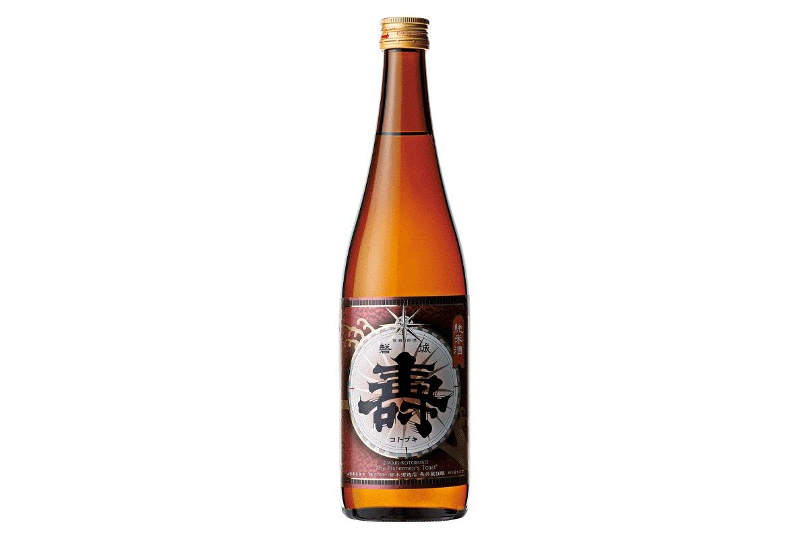

Префектура Осака · Осака, район Нанива · сакэ
Магазин сакэ «Яманака» в Осаке: больше тысячи сортов и пять бутылок, которые советуют попробовать

Хороший магазин сакэ знает не только бутылки, но и людей, которые их делают. В осакском «Яманака» больше тысячи сортов, и за каждой бутылкой здесь видят местность, где она родилась, и характер пивовара.
Магазин
Тысяча сортов в одном месте
«Яманака» открылся в Осаке в 1970 году, а с 1982 года работает как магазин местного сакэ, дзидзакэ. На полках сакэ больше чем из ста пивоварен со всей Японии, всего больше 1 000 сортов: от марок, которые знает каждый, до бутылок, о которых почти никто не слышал.
Магазин не ограничивается торговлей. Здесь проводят дегустации и другие встречи, а ещё «Яманака» держит собственное заведение, где к сакэ подают закуски. Магазин стоит в районе Нанива, к югу от центра Осаки.
В 2021 году в «Яманака» выбрали пять бутылок, которые советовали попробовать в первую очередь. Ниже рассказ о каждой и о пивоварнях, которые их делают. Цены указаны по состоянию на 2021 год.
Хёго
«Дзюнсэй» от пивоварни «Фукунисики»

Пивоварню «Фукунисики» основали в 1839 году в префектуре Хёго. С 1992 года она делает только дзюммай, сакэ из риса, воды и кодзи без добавленного спирта, а с 1997 года берёт только местный рис. Глава пивоварни в восьмом поколении хотел попробовать что-то новое, не изменяя главному, и в 2013 году запустил марку «Дзюнсэй». Всё сакэ этой марки готовят старинным способом кимото, на естественной закваске, не фильтруют и разливают только верхний, прозрачный слой.
Рис для этой бутылки, Ямада-нисики, выращен в городе Касай, рядом с пивоварней.
«Кимото стал для пивоварни шагом на новую ступень, и это сакэ показывает, что получилось. У него мягкий, успокаивающий аромат и гладкое послевкусие. Рекомендуем тем, кому хочется выпить что-то для души»
сотрудники магазина «Яманака»
Пить можно охлаждённым, комнатной температуры или слегка подогретым. Рис отшлифован до 60%, крепость 16 градусов.
Нара
«Ханатомоэ» от пивоварни «Миёсино дзёдзо»

Пивоварня «Миёсино дзёдзо» работает с 1912 года в Ёсино, горном крае префектуры Нара. Дрожжи сюда не добавляют: сакэ бродит только на диких дрожжах. В Ёсино издавна умеют квасить и сохранять продукты, и пивоварня не стала подавлять кислоту, которая появляется при брожении. Вместо этого кислоту и вкус риса здесь научились сводить вместе, и сакэ получается многогранным. Рис для него берут в самой Наре.
«Это новый зимний стандарт пивоварни, которая развивает сакэ без добавленных дрожжей. У него крепкий, выверенный каркас вкуса и приятная, очень узнаваемая кислинка. Его стоит попробовать тем, кто любит натуральное вино и вообще напитки с кислотностью»
сотрудники магазина «Яманака»
Название «кан-гономи» значит «любит подогрев», и это сакэ можно пить комнатной температуры, тёплым или горячим. Крепость 16 градусов.
Хиросима
«Синрай „Дзюсан-то“» от пивоварни «Мива сюдзо»

«Мива сюдзо» основали в 1716 году. Как принято в Хиросиме, здесь варят сакэ на мягкой воде, но пользуются и мягкой, и водой средней жёсткости, чтобы получить вкус, насыщенный рисом и при этом свежий. Крепость «Дзюсан-то» 13 градусов, ниже, чем у обычного сакэ, и отсюда название: «дзюсан» по-японски значит «тринадцать». На этикетке нарисованы 13 человек, и каждый наслаждается сакэ по-своему.
«Рисунок сделал сам глава пивоварни, и от него сразу становится теплее. В отличие от многих лёгких сортов, это сакэ не сладкое, его легко пить за едой. Хороший первый шаг для тех, кто только начинает пить сакэ к столу»
сотрудники магазина «Яманака»
Пить его лучше охлаждённым. Рис Хаттан-нисики выращен в Хиросиме и отшлифован до 65%.
Исикава
«Юхо-но ао» от пивоварни «Миоя сюдзо»

Пивоварня «Миоя сюдзо» с 1921 года работает в середине полуострова Ното в префектуре Исикава. Её старая марка «Хомарэ» давно любима местными жителями. В 2005 году пивоварня запустила марку «Юхо» с идеей «сакэ, которое идёт рядом с едой». Дзюммай после пастеризации разливают и выдерживают прямо на пивоварне, и вкус становится округлым.
«Чтобы раскрыть рис Ямада-нисики из Курода-сё в префектуре Хёго, пивоварня шлифовала зерно плоско, повторяя его форму, сбраживала и хранила сакэ при низкой температуре. Это сакэ открыло для серии „Юхо“ новые возможности: тонкое и глубокое одновременно, с приятным рисовым послевкусием»
сотрудники магазина «Яманака»
Пить можно охлаждённым, комнатной температуры или слегка подогретым. Рис отшлифован до 60%, крепость 16 градусов.
Ямагата
«Иваки-котобуки „Акагане“» от пивоварни «Судзуки сюдзотэн»

«Судзуки сюдзотэн» основали в конце периода Эдо в посёлке Намиэ префектуры Фукусима. Цунами после Великого восточнояпонского землетрясения 11 марта 2011 года унесло пивоварню целиком, и работу пришлось остановить. Но родные дрожжи пивоварни уцелели: их образцы хранились в исследовательском центре. Это помогло возобновить дело, и пивоварня переехала в префектуру Ямагата.
«В день землетрясения, 11 марта, на пивоварне как раз ставили „Акагане“, и то сакэ так и не увидело света. С 2012 года его каждый год варят в Ямагате, а с этой партии перешли на кимото»
сотрудники магазина «Яманака»
В 2021 году, через десять лет после катастрофы, пивоварня собиралась частично вернуть производство в Фукусиму. Тема «Акагане» это выдержка: у сакэ глубокий и при этом спокойный, широкий вкус. Пить его можно комнатной температуры, тёплым или горячим. Рис Омати выращен в префектуре Окаяма, крепость 16 градусов.
Магазин сакэ «Яманака»
- Адрес
- префектура Осака, Осака, район Нанива, Сикицу-Ниси, 1-10-19
- Телефон
- +81 6-6631-3959
- Часы работы
- 10:00–19:00 (суббота и праздники до 18:00)
- Выходные
- воскресенье
- Сайт
- yamanaka-sake.jp
Фото: Норихито Судзуки.